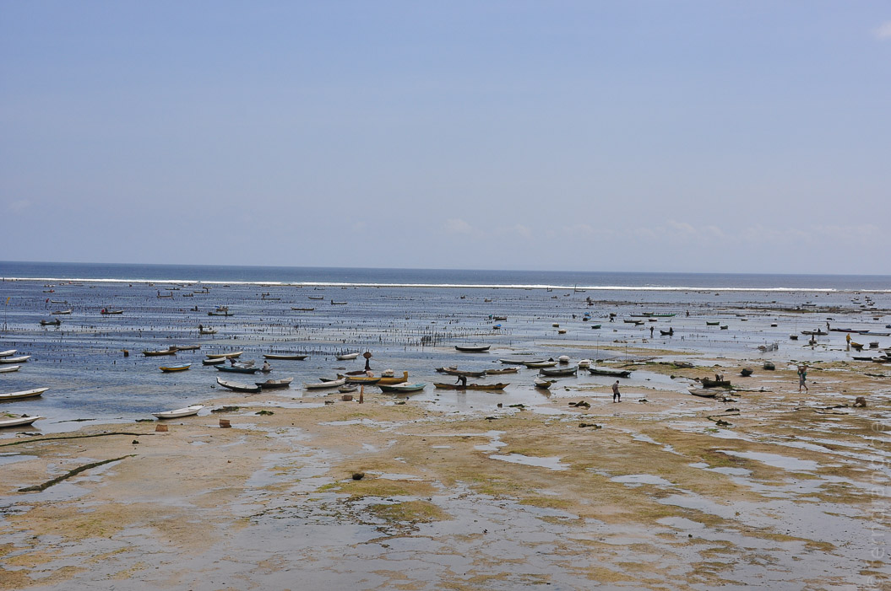
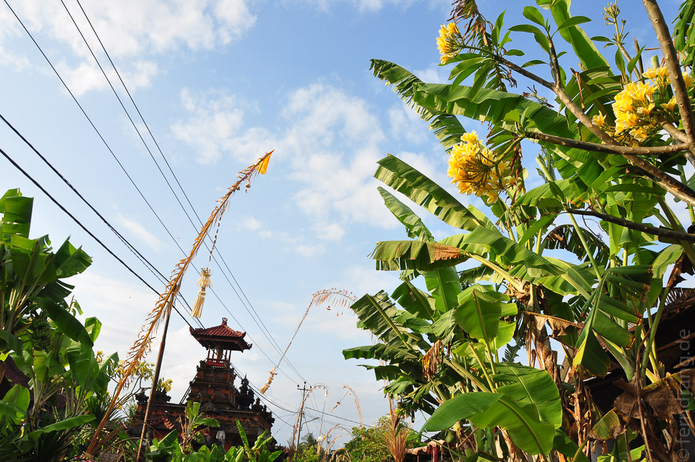
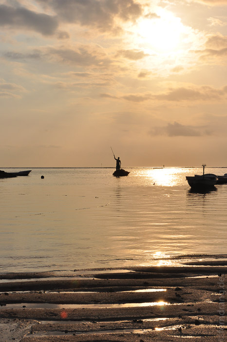

Nach einer spektakulären zweistündigen Bootsfahrt - mehr durch als über die Wellen hinweg - hat die Fähre vor Nusa Lembongan halt gemacht. Alle Passagiere, die auf die Insel wollten, wurden in ein kleineres Boot umgetopft und später per Sammeltaxi weiterverfrachtet.
Ich habe auch direkt ein hübsches, balinesisch eingerichtetes Zimmer für wenig Geld gefunden. Das Hotel Bungalo No. 7 liegt direkt am Strand mit Blick über die ganze Bucht von Jungutbatu. Schon von hier aus kann man die riesigen Algenfelder bestaunen. Diese werden hier nämlich in großem Stil angebaut und getrocknet.
Das kleine Dorf ist noch recht ursprünglich und von großen Touristenscharen unberührt. Ab 10 Uhr abends werden hier die Bürgersteige hochgeklappt und alle gehen schlafen.
Heute habe ich zusammen mit Gerd, einem Holländer, den ich auf der Fähre kennen gelernt habe, die Insel erkundet. Den Empfehlungen aller Einheimischer zum Trotz sind wir die Sache zu Fuß angegangen. Die Insel ist an der Nord- und Ostseite von einem dichten Mangrovenwald umgeben und von nur wenigen Wegen durchzogen. An der Südspitze befindet sich eine lange Hängebrücke zur Nachbarinsel Nusa Ceningan. Der Ort Lembongan selber, der der Insel seinen Namen gibt, ist recht unspektakulär. Die Westseite hat schöne weiße Sandstrände, wie zum Beispiel den Mushroom Beach, an dem wir uns nach stundenlangem Laufen endlich niedergelassen haben.
Morgen früh werde ich die letzte Etappe meiner Reise antreten und mit der Fähre nach Sanur übersetzen.
